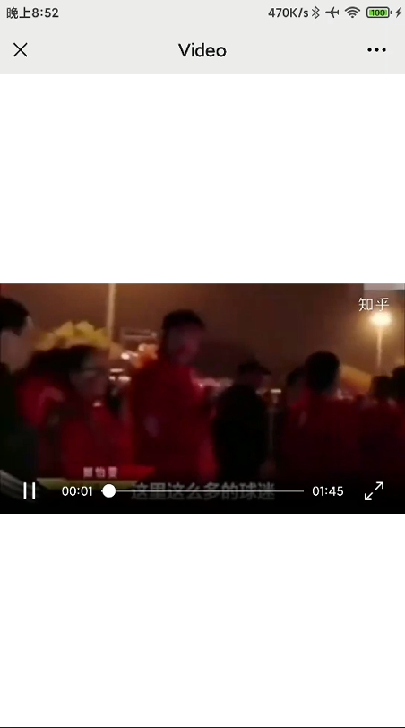
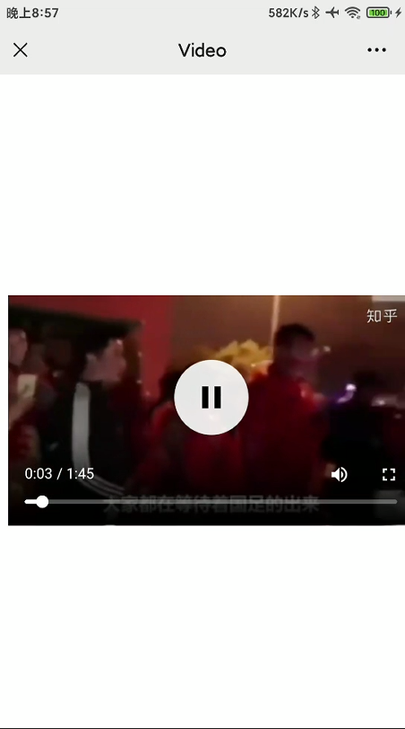

原生video标签§
<video id="vid" src="./assets/test.mp4" poster="./assets/test.png" controls></video>
X5内核视频两种播放形态§
- 页面内播放
X5内核视频在用户点击后默认会进入全屏播放，前端可以设置video的x5-playsinline属性来将视频限定于网页内部播放
<video id="vid" src="./assets/test.mp4" poster="./assets/test.png" controls x5-playsinline></video>

- 同层页面内播放
同层页面内播放是标准的视频播放形态，在video标签中添加且只需要添加一个(不要与x5-playsinline同时存在):x5-video-player-type='h5-page'属性来控制网页内部同层播放，可以在视频上方显示html元素。
<video id="vid" src="./assets/test.mp4" poster="./assets/test.png" controls x5-video-player-type="h5-page"></video>
